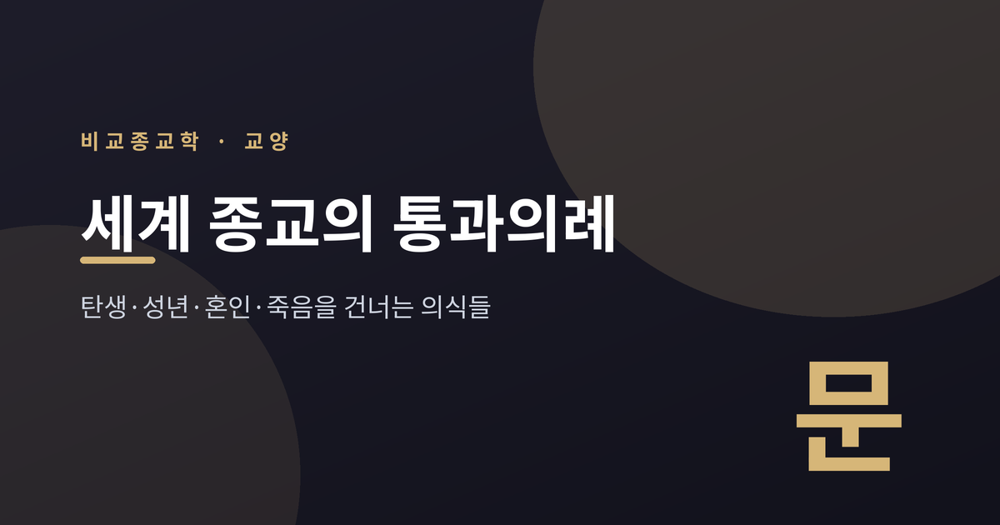
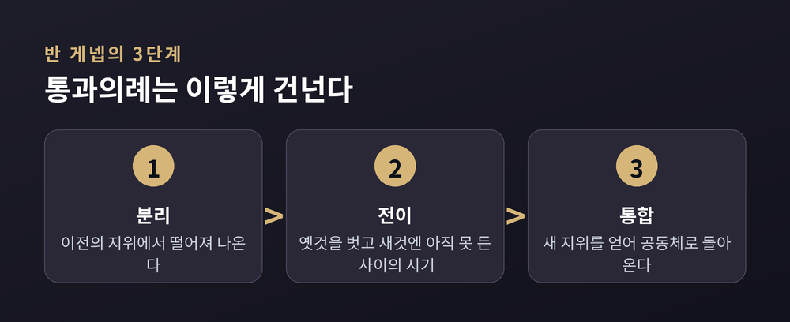
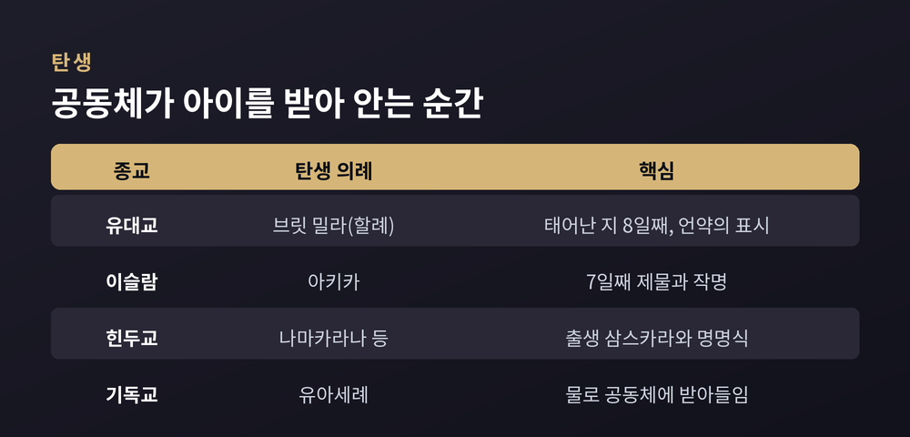
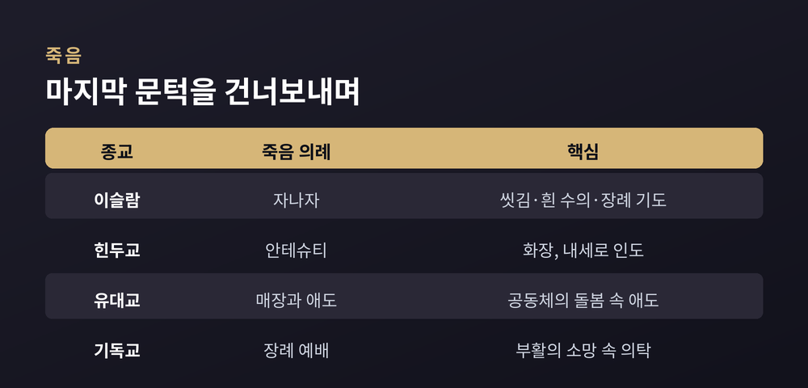
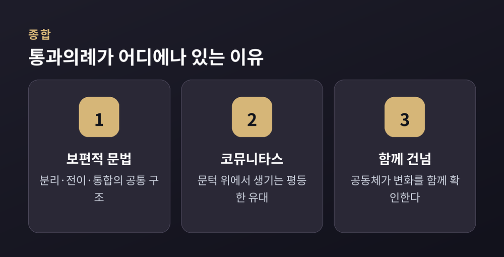

사람은 태어나고, 어른이 되고, 짝을 만나고, 끝내 죽습니다. 이 네 개의 매듭마다 거의 모든 종교는 의식을 마련해 두었습니다. 이번 글에서는 세계 종교의 통과의례를 비교종교학의 눈으로 정리해 보겠습니다. 특정 신앙의 옳고 그름을 가리려는 글이 아닙니다. 서로 다른 전통이 같은 인생의 문턱을 어떻게 건너는지 나란히 살펴보는 자리입니다.
먼저 세 줄로 요약하면 이렇습니다.

'통과의례'라는 말은 프랑스 학자 아르놀트 반 게넵에게서 나왔습니다. 그는 1909년 책에서, 인생의 지위가 바뀌는 자리마다 공동체가 이를 의식으로 표시한다고 보았습니다.
그가 찾아낸 공통 구조는 세 단계입니다.
첫째는 분리입니다. 이전의 나, 이전의 자리에서 떨어져 나오는 단계입니다. 둘째는 전이입니다. 옛 상태는 벗었지만 새 상태에는 아직 들지 못한 '사이'의 시기입니다. 흔히 가르침과 시련이 따라붙고, 정체성이 잠시 흐려집니다. 셋째는 통합입니다. 새 지위를 얻어 공동체로 되돌아오는 단계입니다.
전이 단계를 뜻하는 말 '리미널(liminal)'은 라틴어 리멘(limen), 곧 '문지방'에서 왔습니다. 통과의례란 결국 하나의 문턱을 건너는 일인 셈입니다.
반 게넵의 틀을 한 걸음 더 밀고 나간 사람이 영국 인류학자 빅터 터너입니다. 그는 잠비아 은뎀부족과 함께 지내며 의례를 관찰했습니다.
터너가 주목한 것은 가운데 단계, 곧 '리미널리티'였습니다. 문턱 위에 선 사람들은 잠시 서열도 지위도 없는 상태가 됩니다. 그때 특별한 유대가 생겨납니다. 터너는 이를 '코뮤니타스(communitas)'라 불렀습니다. 함께 시련을 겪는 이들 사이에 평등과 친밀이 피어나는 것입니다.
예전의 학자들은 의례를 사회를 유지하는 장치쯤으로 보았습니다. 터너는 달리 보았습니다. 리미널 국면은 일상의 규범을 잠시 멈춰 세우고, 새로운 관계와 변화가 싹트는 열린 공간이라는 것입니다. 문턱은 빈 공백이 아니라 무언가 태어나는 자리라고 그는 말했습니다.
첫 문턱은 태어남입니다. 아이는 아직 아무 지위가 없습니다. 그래서 각 전통은 아이를 공동체 안으로 받아들이는 의식을 둡니다.
유대교는 남아가 태어난 지 여드레째 되는 날 브릿 밀라, 곧 할례를 행합니다. '할례의 언약'이라는 뜻이며, 아브라함의 언약에 새 세대를 잇는 표시입니다. 유대교에서 가장 오래된 의식으로 꼽힙니다.
이슬람에서는 아기가 태어나면 귀에 신앙고백을 속삭이고 혀에 단것을 대줍니다. 이레째에는 아키카를 행해 양이나 염소를 잡고, 이날 이름을 지어 줍니다.
힌두교에는 출생을 둘러싼 삼스카라가 여럿입니다. 출생 직후의 의례, 이름을 짓는 나마카라나, 첫 외출과 첫 이유식까지 단계가 촘촘합니다.
기독교는 유아세례로 아이를 신앙 공동체에 받아들입니다. 아기가 스스로 서약할 수 없으니 부모와 대부모가 대신 약속합니다. 다만 세례 시기는 교파마다 다릅니다. 가톨릭·정교회와 다수 개신교는 유아세례를 행하지만, 침례교처럼 본인이 신앙을 고백할 나이에 세례를 주는 전통도 있습니다.

두 번째 문턱은 어른이 되는 일입니다. 여기서는 시련과 학습이 유난히 두드러집니다.
유대교의 바르 미츠바가 대표적입니다. 남아는 만 열세 살, 여아는 만 열두 살에 '계명의 아들·딸'이 됩니다. 이때부터 부모와 별개로 자신의 행위에 스스로 책임을 진다고 봅니다. 오랜 준비 끝에 회당에서 토라를 낭독합니다.
힌두교의 우파나야나는 여덟에서 열두 살 무렵 남아에게 신성한 실을 걸어 주는 의식입니다. 정규 학습과 영적 여정의 시작을 뜻하며, 학생기라는 새 인생 단계로 들어섭니다.
불교권에는 출가와 수계가 있습니다. '집을 떠나 나아간다'는 뜻으로, 머리를 깎고 삼귀의와 계를 받아 사미가 됩니다. 태국에서는 청년이 결혼 전 짧게 출가해 승려로 지내는 관습이 있습니다. 본인과 가족 모두에게 공덕이 된다고 여깁니다.
동아시아 유교권에는 관례가 있습니다. 남자는 상투를 틀어 갓을 씌우고, 여자는 비녀를 꽂았습니다. 성인의 이름인 '자'를 받는 것도 이때입니다. 우리나라에서는 고려 때 국가 의례로 자리 잡아 조선의 양반에게 필수가 되었습니다.
기독교의 견진성사는 유아세례로 시작된 편입을 본인이 굳게 확인하는 예식입니다. 세례의 은총을 다지고 성령의 은사를 받는다고 봅니다.
예전의 성년식이 격리와 시련을 앞세웠다면, 오늘날의 성년 의례는 학습과 축하 쪽으로 기운 경우가 많습니다. 문턱의 무게가 가벼워졌다는 아쉬움을 말하는 이들도 있습니다.
세 번째 문턱은 혼인입니다. 반 게넵도 결혼을 대표적 통과의례로 꼽았습니다. 신랑과 신부는 옛 정체성과 새 정체성 사이에 나란히 서게 됩니다.
여러 전통을 가로질러 되풀이되는 상징이 있습니다. '신성한 결합'입니다. 손을 맞잡고, 반지를 나누고, 옷이나 천을 묶습니다. 서약과 축복, 반지와 촛불과 경전이 자리를 지킵니다.
이슬람의 니카는 두 사람을 사랑과 동반의 언약으로 묶는 신성한 계약입니다. 새로운 가정의 출발이며, '신앙의 절반'이라 표현되기도 합니다. 힌두교의 비바하는 열여섯 삼스카라 가운데 하나로 오늘날에도 핵심 의례로 지켜집니다. 유교권에서 혼례는 관혼상제의 하나로, 두 가문의 결합과 사회적 승인을 함께 확인하는 자리였습니다.
대다수 문화에서 혼인 의례는 후손을 통한 공동체의 존속과 이어집니다. 두 사람의 약속을 가족과 공동체가 함께 지켜본다는 점이 핵심입니다.
마지막 문턱은 죽음입니다. 죽음은 떠나는 이에게는 이 세계와의 분리이고, 남은 이에게는 애도라는 긴 전이의 시간을 안깁니다.
이슬람의 자나자는 사망 직후 시신을 향기 있는 물로 홀수 번 씻기는 데서 시작합니다. 흰 수의로 감싸고 장례 기도를 드립니다. 죽음을 알라께로의 궁극적 귀환으로 봅니다.
힌두교의 안테슈티는 '마지막 제사'라는 뜻으로, 보통 화장으로 치릅니다. 고인의 영혼이 내세로 가 평안에 이르도록 돕는 의례입니다. 열여섯 삼스카라의 맨 끝을 이룹니다.
유대교는 매장을 원칙으로 하고, 애도 기간 동안 유족이 공동체의 돌봄 속에서 상실을 통과합니다. 기독교는 장례 예배로 고인을 하나님께 의탁하며 부활의 소망 속에 떠나보냅니다. 유교권에서는 상례와 제례를 통해 죽은 이를 조상으로 오래 모십니다.
방식은 저마다 다릅니다. 그러나 죽음을 홀로 두지 않고 공동체가 함께 감당한다는 태도는 다르지 않습니다.

탄생·성년·혼인·죽음. 이 네 매듭은 종교와 문화를 가리지 않고 되풀이해 의식으로 표시됩니다. 반 게넵은 이 보편성을 '분리·전이·통합'이라는 하나의 문법으로 설명했습니다.
터너는 여기에 한 겹을 더했습니다. 문턱 위의 사이 상태는 불안한 공백이 아니라, 평등한 유대와 새로운 가능성이 태어나는 창조의 자리라는 것입니다.
교리도, 시기도, 형식도 서로 다릅니다. 그럼에도 '사람을 한 자리에서 다른 자리로 건네준다'는 기능은 닮아 있습니다. 통과의례는 한 사람의 변화를 공동체가 함께 확인하고 감당하는 방식입니다.

정리하면 이렇습니다. 우리는 저마다 다른 문턱 앞에 서지만, 그 문턱을 홀로 넘지는 않습니다. 곁에서 함께 건너 주는 이들이 있어 사람은 다음 자리로 나아갑니다.
"의례란 결국, 혼자 넘기 버거운 문턱을 함께 넘는 일이다."
다른 종교의 의식이 낯설게 느껴지신다면, 그 낯섦 아래 흐르는 같은 마음을 한 번 떠올려 보시면 좋겠습니다.